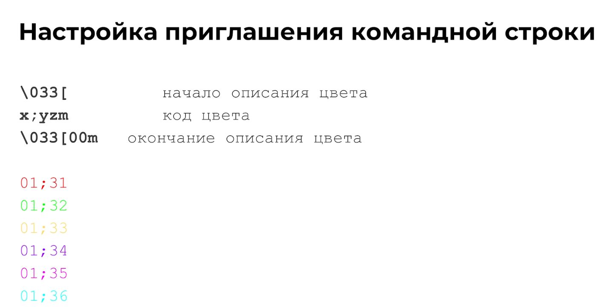
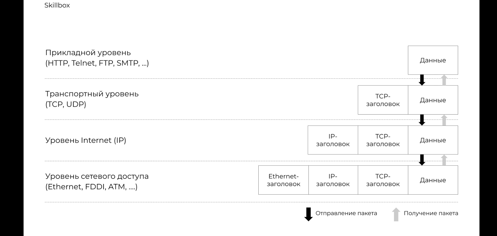
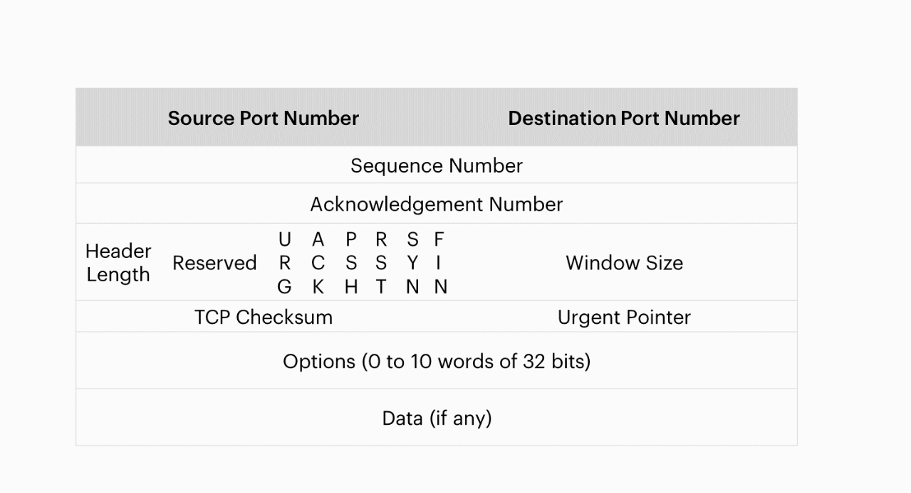
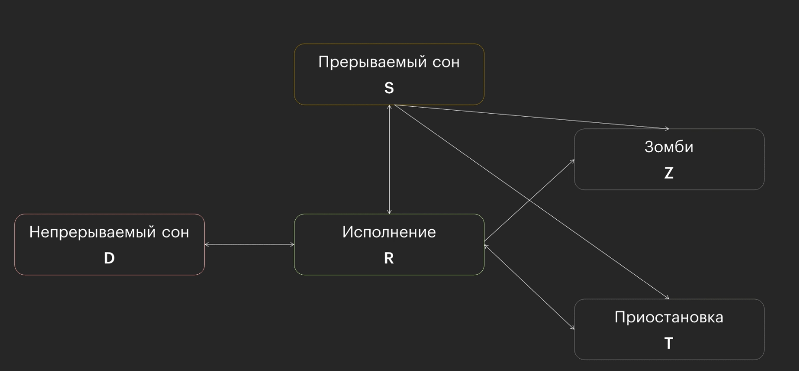

DevOps
Страницы
Настройка ZSH окружения Linux - https://www.linuxfordevices.com/tutorials/linux/make-arch-terminal-awesome

Автоматическая регистрация имён хостов в DNS на MikroTik
Полезная статья по автоматическому созданию статической DNS записи
Настройка fail2ban для защиты sshd
Как установить Fail2ban для защиты SSH на CentOS / RHEL 8
Импорт публичного ключа на сервер
SSH авторизация по ключам. PuTTy | Блоговик
Установка Webmin на CentOS 8
How to Install Webmin on CentOS 8
Создание сертификата Let’s encrypt в apache CentOS
Создание сертификата Let’s Encrypt для Apache в CentOS 7
Пользователи и VIM
VIM
W - переместиться на начало слова E - переместиться на конец слова
B - переместить курсор в начало слова c конца
Пользователи
При выводе файла /etc/passwd мы получаем примерно вот такой вывод в командную строку.

Пользователь в Linux состоит из таких частей

Пользователь с uid 0:0 имеет неограниченные права на систему(удаление, изменение, добавление)
Создание пользователя
Создать пользователя мы можем при помощи команды useradd
Пример команды
useradd username -b /home/username -c "Username Usernameov" -g userfroup -p password
Или же
adduser username
Команда является не интерактивной, т.е при создании пользователя не будет создана домашняя директория, пользователь не будет добавлен в группу а так же не будет задан пароль. Для интерактивного создания пользователя используется adduser.
Редактирование пользователя
Для редактирования атрибутов пользователя используется команда usermod Команда не является интерактивной, поэтому для изменения атрибутов нужно использовать дополнительные ключи.
Пример

Файл с паролями
Файл с паролями находится по пути /etc/shadow
Доступ на чтение к нему имеет только root
Структура файла выглядит так

Структура записи в файл выглядит таким образом

Смена пароля
Для смены пароля используется утилита passwd.
passwd username
Флаги доступа
- SUID
- SGID
- Sticky-bit
SUID
Запуск файла с теми правами, которые есть у владельца файла, а не у пользователя, который его запускает.
chmod u+s file
SGID
- Запуск файла с теми правами, которые есть у группы владельца файла, а не у группы пользователя, который его запускает
- Группа-владелец созданных в каталоге файлов — группа владельца директории, а не группа, которой принадлежит пользователь, создавший файл.
chmod g+s dir - используется для каталогов
Sticky-bit
Файл в директории может удалить только тот, кто этот файл создал.
chmod +t dir - даёт права на удаление только создателю директории.
Материал по данной теме https://losst.pro/prava-dostupa-k-fajlam-v-linux?ysclid=ly5u254la660647224
Права доступа
В Linux можно назначать права доступа цифрами Чтение - 4
Запись - 2
Исполнение - 1
Пример назначения прав доступа выглядит так
sudo chmod 777 example.txt
Где первая 7 означает владелец, вторая 7 означает группа, а третья 7 означает остальных пользователей.
Группы пользователей
Файл групп выглядит так

Формат записи группы выглядит таким образом

Создание группы
Для создания группы используется следующая команда
groupadd groupname
Подключение при помощи ключа SSH
- Генерируем ключевую пару ssh-keygen -t ed25519 -C “comment”, где ssh-keygen это исполняемый файл, который генерирует ключи. -t ED25519 - это тип ключа. -C “comment” - добавляет комментарий к ключу.
- Копируем открытый ключ на сервер: ssh-copy-id -i “key.pub” user@server
- Подключаемся к серверу ssh user@server
Копирование файлов через SSH
Копирование осуществляется через SSH при помощи команды scp.
Пример использования scp <опции> user1@server2:<путь до файла> user2@server2:<путь до файла>
Опция -r позволяет копировать целые папки
Дополнительные примеры:
- scp user@server:/tmp/1.txt /home/example — Это копирование с сервера к себе на машину
- scp /home/example/1.txt user@server:/tmp — Это копирование на удаленный сервер.
Мониторинг
Команды
Краткое имя сервера - hostname
Полное имя - hostname -f
Узнать версию OS - cat /etc/os-release
Узнать версию ядра - uname -r
Модель процессора - cat /proc/cpiuinfo | less
Объем памяти - free -h | старый способ - sudo dmesg | grep Memory\:
Дисковые устройства - lsblk —fs; lsblk -o NAME, SIZE, FSTYPE, FSSIZE, FSUSED, MOUNTPOINT, PARTTYPENAME
Точки монтирования - cat /etc/fstab
Свободное место на диске - df -h
Сетевые интерфейсы:
- ip link show
- ifconfig
- sudo lshw -class network -short
- ip -br address show
- netstat -rn
- ip route show
- cat /etc/resolv.conf
Настройки времени - date; ls -l /etc/localtime; timedatectl
Вся линейка утилит ls*

Производительность
Процессор и память
- openssl speed -evp md5 -multi N
- sysbench cpu run —threads=n —time=60
- sysbench memory run —threads=N —time=60
Диски
Скорость записи:
dd if=/dev/zero of /tmp/test1.img bs=256M count=20 oflag-dsync
Скорость чтения
time dd if=/path/to/file of=/dev/null ms=8k
Uptime
uptime или w

Смотрим список процессов - ps -ef
Смотрим дочерние процессы - pstree -p


Процессы и перенаправление вывода
Убить процесс
kill "pid"
Преобразование вывода
Команда cut — это команда выборки отдельных полей из строк файла.
Она используется для выборки колонок из таблицы или полей из каждой строки файла. Если применить терминологию баз данных, команда cut выполняет операцию проекции отношения.
https://losst.pro/komanda-cut-linux?ysclid=ly5jxs4ib2795871247
cut опции путь_к_файлу
Команда tr - это утилита командной строки UNIX для перевода или удаления символов. Она поддерживает ряд преобразований, включая преобразование верхнего регистра в нижний, сжатие повторяющихся символов, удаление определенных символов и базовый поиск и замену.
https://losst.pro/komanda-tr-v-linux?ysclid=ly5jvjn3ds742307682
tr [КЛЮЧ]... НАБОР1 [НАБОР2]
https://losst.pro/komanda-xargs-linux?ysclid=ly5juzw62w597349948
xargs — утилита для формирования списка аргументов и выполнения команды в UNIX-подобных операционных системах.
первая_команда | xargs опции вторая_команда аргументы
Cat (от англ. concatenate) — утилита UNIX, выводящая последовательно указанные файлы (или устройства), объединяя их в единый поток.
Если вместо имени файла указывается «-», то читается стандартный ввод.
Может использоваться в следующих случаях:
- Когда требуется вывести куда-то файл без изменений.
- Когда требуется объединить более одного файла (например, части одного файла, разбитого командой split), либо файл(ы) с потоком стандартного ввода.
- Когда требуется просмотреть содержимое файла.
https://losst.pro/komanda-cat-linux?ysclid=ly5k0de324112823541
cat опции файл1 файл2 ...
Команда du (Disk Usage, т.е. использование диска) – это стандартная команда Unix/Linux, используется для показа суммарной информации об использовании диска файлами и директориями.
https://losst.pro/komanda-du-v-linux?ysclid=ly5lix5244130731945
du опции /путь/к/папке
du -h - будет показывать размерность файла(МБайт, КБайт)
Стандартные потоки
- Команда xargs превращает строку, полученную на стандартный ввод в аргументы и передаёт их команде.
- Операторы перенаправления вывода: >, >>.
- Пайп позволяет передать стандартный вывод одной команды на стандартный ввод другой.
STDIN — ввод — 0
STDOUT — вывод — 1
STDERR — ошибки — 2

Фоновые процессы и полезные команды
declare используется для создания переменной
unset для удаления переменной
declare с ключом -r используется для создания константы
declare -r
alias позволяет посмотреть список всех доступных алиасов в системе (алиас присваивается для упрощения работы с командой - например ps -auxf сокращается до pss по средствам выполнения команды
alias pss “ps -auxf”
Для выполнения команды в фоновом режиме достаточно добавить в конце команды символ & https://losst.pro/kak-zapustit-protsess-v-fone-linux?ysclid=lz8gg59p44543443975
Команда jobs показывает все фоновые задачи
bg номер процесса - переводит процесс в фоновые режим
fg - выводит процесс из фона
Перенаправление вывода команды в пустоту
*команда* напрмер
traceroute ya.ru &> /dev/null
После этого мы можем посмотреть код возврата командой echo $?

Планировщик задач Cron
Cron позволяет запуcкать команды/скрипты по рассписанию.


Скрипты
Написание скрипта начинается вот с такой строчки
https://losst.pro/napisanie-skriptov-na-bash?ysclid=ly6usffegc342352856
#! /bin/bash
Обозначение переменной в Bash

Принцип определения исполняемого файла

Специальный параметр


Исполнение скрипта без указания ./ в определенной директории
Для того скрипт выполнялся без указания директории ./ необходимо добавить нужную нам директорию в $PATH. Для этого мы выполним следующие действия.
- Убедиться что скрипт имеет право на исполнение. Для этого используйте команду chmod
chmod +x my_scripth.sh
- Добавляем нужную нам директорию в переменную окружения PATH. Для этого откройте файл конфигурации вашего shell ( обычно это .bashrc или .bash_profile) и добавьте в конце строчку
export PATH=$PATH:"/home/%user%/scripts"
- Примените изменения
source ~./bashrc
После этого у вас появляется возможность запускать скрипты без указания ./ в директории, которую вы указали в переменной PATH.


Для переноса директории содержащей пробелы скриптом, требуется переменную в скрипте заключить в двойные кавычки - “”
Условный оператор if
В Bash условный оператор if записывается следующим образом
if [ a = b ]
then
echo "A = B"
else
echo "A do not match B"
fi
Арифметические операции
Арифметические операции в Bash скрипте

let - это встроенная функция bash, которая позволяет производить базовые арифметические операции.
Команда не умеет выводить результат на стандартный вывод.
let <арифметическая операция>
expr - похож на let за исключением того, что вместо сохранения результата в переменную expr по умолчанию печатает ответ.
Но никто не запрещает сохранять результат expr в переменные с помощью command substitution: x = $(expr 2 + 2). В отличие
от let не нужно заключать выражения с пробелами в кавычки.
Нужно ставить пробелы вокруг операторов.
Оператор выбора
Командная строка Linux | Конструкция case (metanit.com)
Конструкция case позволяет сопоставить некоторое выражение (например, переменную) с рядом значений. И если сравниваемое выражение равно определенному значению, то выполнить некоторый набор команд. Общий синтаксис конструкции:
case "$перменная" in
"вариант1" ) команда;;
"вариант2" ) команда;;
*)
esac
Цикл While
Тело цикла While выглядит следующим образом
while [CONDITION]
do
[COMMANDS]
done
Цикл while в Bash - Команды Linux
Until
Цикл « until используется для выполнения заданного набора команд до тех пор, пока данное условие оценивается как ложное.
Цикл Bash until принимает следующую форму:
until [CONDITION]
do
[COMMANDS]
done
Настройки приглашения командной строки

Ctrl + R - поиск по истории вводимых команд в shell linux.
Способ передачи многострочного текста в команду

Функции
Синтаксис создания функции очень прост:
**имя_функции() { список_команд }**
Имя функции не должно совпадать ни с одной из существующих команд или функций, а все команды в теле функции пишутся с новой строки.
Функции bash в скриптах - Losst
Архивация
По умолчанию в системах Unix/Linux включен встроенный архиватор tar, позволяющий запаковывать/распаковывать архив и выполнять много других операций с заархивированными файлами. В его функционал не входит компрессия, но он отлично работает с такими утилитами, как Gzip и BZip2 – с помощью них и выполняется сжатие файлов.
Команда tar: архивация, распаковка и сжатие файлов в Linux
AWK
Команда awk - один из самых мощных инструментов для обработки и фильтрации текста, доступный даже для людей никак не связных с программированием. Это не просто утилита, а целый язык разработанный для обработки и извлечения данных. В этой статье мы разберемся как пользоваться awk.


SED
Команда sed - это потоковый редактор текста, работающий по принципу замены. Его можно использовать для поиска, вставки, замены и удаления фрагментов в файле. С помощью этой утилиты вы можете редактировать файлы не открывая их. Будет намного быстрее если вы напишите что и на что надо заменить, чем вы будете открывать редактор vi, искать нужную строку и вручную всё заменять.


Best Practices
IP, DNS

traceroute - программа, которая показывает, какой путь проходит пакет, прежде чем достичь конечный хост.
mtr - расширение для traceroute, которое помимо этого еще и пингует хосты и показывает задержку до этих хостов.

WWW
HTTP


Системы инициализации
Системы инициализации Linux


Systemd
Основные виды юнитов


Symlink и hardlink
Символические и жесткие ссылки Linux - Losst
Каталог /dev
Подключенные устройства Linux - Losst
How to Create Block Device Files Using mknod Command
Монтирование файловой системы
Монтирование диска в Linux - Losst

13 - Разметка диска
Разметка диска
Автоматическое монтирование fstab и systemd - Losst
На данном скриншоте показано, как монтируется добавленый диск

Реляционные базы данных


Типы данных MySQL

DML, DDL, Transaction


Транзакции
ACID - свойства
ACID. Что под капотом у транзакции
- Атомарность
- Согласованность
- Изолированность
-
Прочность
-
Атомарность гарантирует, что транзакция не может выполниться частично
- Согласованность требует, чтобы после завершения транзакции данные оставались консистентными и валидными.
- Изолированность требует, чтобы при параллельном выполнении транзакции не влияли друг на друга.
- Прочность гарантирует, что, если пользователь получил подтверждение, что транзакция выполнена, изменения не будут отменены из за какого-либо сбоя.
Base - свойства
- Базовая доступность (Basically available)
- Мягкое состояние (Soft state)
- Согласованность в конечном счёте (Eventual consistenct)
Не реляционные базы данных
CAP - Теорема
Для любой реализации распределенных вычислений возможно обеспечить не более двух из трёх следующих свойств.
- Согласованность (Consistency)
- Доступность (Availability)
- Устойчивость к разделению (Partition tolerance)
Основные виды моделей организаций данных
- Иерархическая модель
- Сетевая модель
- Реляционная модель
- Не реляционная модель
Резервное копирование
Виды резервного копирования
Создание Backup базы данныз
- Полное резервное копирование
- Дифференциальное резервное копирование
- Инкрементальное резервное копирование
Создание бэкапа базы данных MySQL происходит следующим образом
sudo mysqldump -u root mydb > /tmp/dump.sql
Данная команда позволяет выполнить бэкап базы в виде её дампа. Так же мы можем заархивировать бэкап после его создания. Для этого используем следующую команду
sudo mysqldump -u root -p *Password* mydb | gzip > /tmp/dump.sql
TCP/IP

Канальный уровень
Типы передачи данных
- Unicast
- Multicast
- Broadcast

Сетевой уровень
Схема IP пакета

Маска подсети


Частные диапозоны

Транспортный уровень
Категории портов
- Хорошо известные порты (0-1023)
- Зарегистрированные порты (1024 - 49151)
- Динамические (частные) порты (49152 - 65535)
Протокол UDP
Формат протокола
Socket =
Протокол TCP
Характеристика протокола
- Установка соединения
- Надёжность доставки
- Доставка и сборка сегментов в определённом порядке
- Контроль потока
Состав пакета TCP

Флаги TCP
Транспортный протокол TCP - Sysadminium
Протоколы

LAMP Stack
Межпроцессное взаимодействие
5 состояний процесса

IPC
- Пайпы(конвейер)
- Сигналы
- Сокеты
- Очереди сообщений
- Семафоры
- Совместно используемая память
Виды IPC
- Локальные
- Удалённые
- Высокоуровневые
Commands
Узнать родительский процесс у процесса
ps -o ppid= "PID"
Deb - пакет
Типы лицензий

Четыре свободны GPL
Виды открытых лицензий